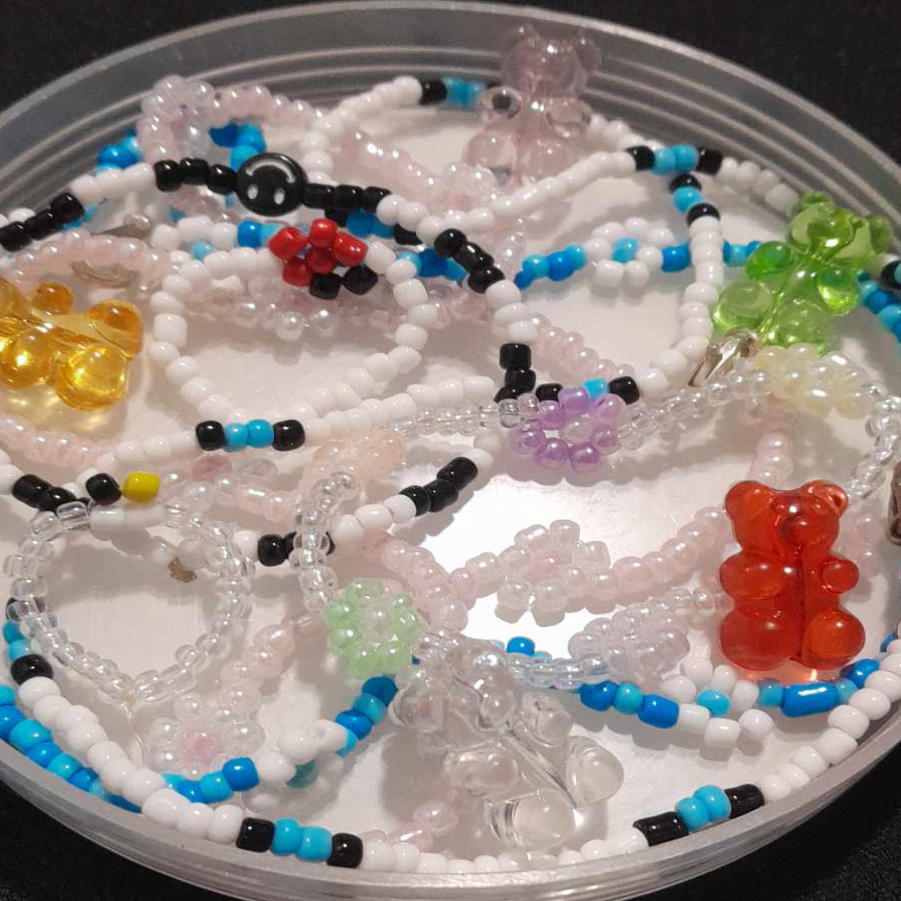
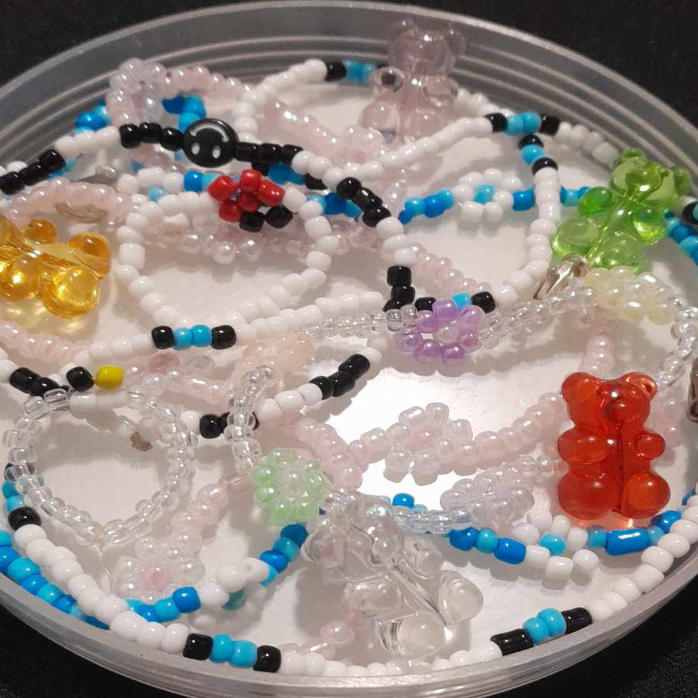

My hobbies are making beaded bracelets, necklace, reading webtoon stories, play board games, online games, watch K-drama, movies and series.
I started to make beaded bracelets and necklace when I watched one of Twice videos which is Time To Twice(TTT); they were the
one who influenced me, some of the design of my beaded necklaces and bracelets were inspired by them.
However, these past few days I started to stop making it because, I ran out of beads. I play games such as roblox, cod, snakes and
ladder, and monopoly. These hobbies are like reward to myself from the hell week(hihi).
 


When it comes to movies, series and webtoon; These are my recommended and top tier:
Sweet Home, John Wick, Attack on Titan, The Hunger Games, Stranger Things, Love Alarm